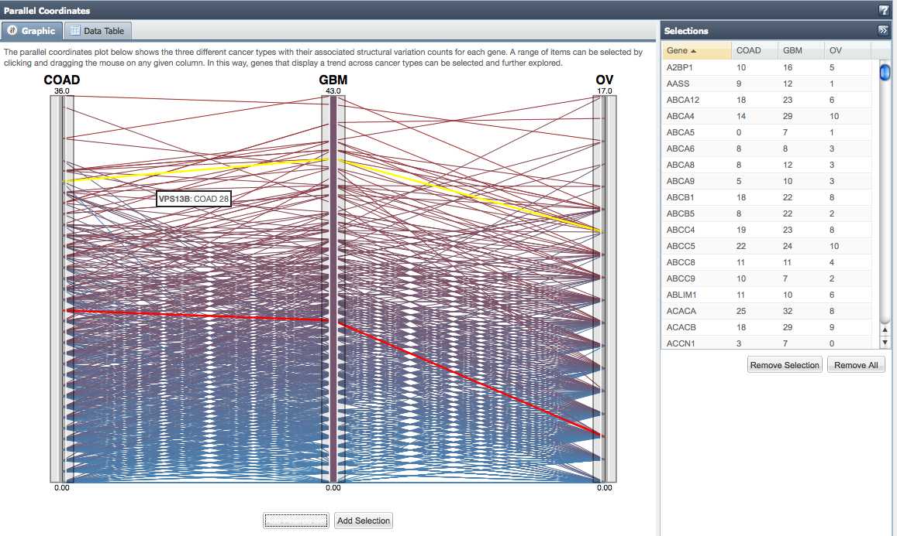
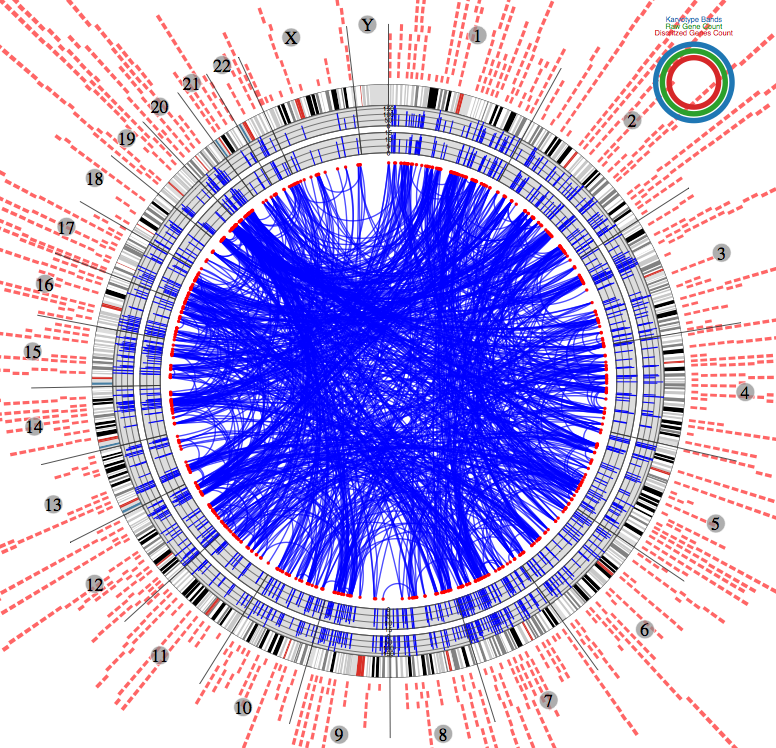
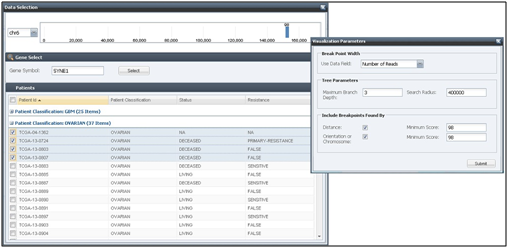
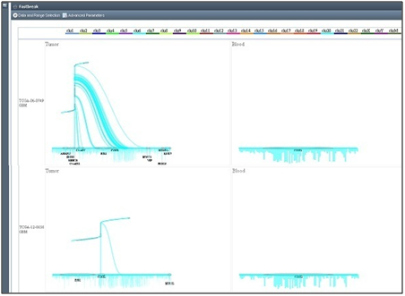

<div lang="EN-US" link="blue" vlink="purple" style="width:800px;margin:20px">

<div>
    <span style="font-size:24pt;font-weight:bolder;color:black">Fastbreak</span>

<p style="font-size:12pt;color:black">This
web site provides tools for the exploration of structural variation data from the Fastbreak analysis within <a href="http://cancergenome.nih.gov" target="_blank">the Cancer Genome Atlas
project (TCGA)</a>.   Browsing of identified structural variations for the 
different cancer types is supported through a purpose built set of 
visualization tools.  The tab opposite can be used to explore the following visualizations: 
</p>   

<ul style="font-size:12pt;color:black" type="disc">
 <li>The Cancer Comparator parallel coordinate plot allows exploration of similarities
     between cancers by displaying genes that have high structural variance.</li>
 <li>The Gene Disruption circular plots which give an individual cancer type view of gene disruption behavior.  
     </li>
 <li>The Fastbreak tool which
     allows for a comparison of the individual sample genome aberrations identified
     through the analysis of structural variations.</li>
</ul>
       <br/>
<table border="1" cellpadding="0">
 <tr>
     <td width="399" style="padding:.75pt .75pt .75pt .75pt;height:260pt">
     <p></p>

     </td>
     <td width="388" style="padding:.75pt .75pt .75pt .75pt">
     <p></p>
</td>
</tr>
<tr>
     <td width="399" valign="top" style="padding:.75pt .75pt .75pt .75pt;height:60pt">
<p style="font-size:10pt;color:black"><span><b>Figure 1: Cancer Comparator Interactive Parallel Coordinate Plot</b></span> <br> To explore similarities between cancers, genes that have high structural variance are visualized in a parallel coordinates plot.  Mouseover events, and an alternate table view allow the user to view specific information regarding points on the plot and number of disruptions found for that gene. </p>
     </td>
     <td width="388" valign="top" style="padding:.75pt .75pt .75pt .75pt">
<p style="font-size:10pt;color:black"><span><b>Figure 2: GBM Cancer Interactive Circvis Plot</b></span> <br>   The cancer specific visualization level shows mutual information distances between genes across all patients as a circular plot.  Mouse-over events and alternate table views can be used to view the data in more detail. </p>
</td>
 </tr>

<tr>
<td width="509" style="padding:.75pt .75pt .75pt .75pt">
     <p></p>
</td>
<td width="452" style="padding:.75pt .75pt .75pt .75pt">
     <p></p>
</td>
   </tr>
<tr>
<td width="509" valign="top" style="padding:.75pt .75pt .75pt .75pt">
<p style="font-size:10pt;color:black"><span><b>Figure
  3: Chromosome, Patient, and Advanced Parameter Selection </b></span><br>
  Selection of patients and chromosome location can be done in the "data and range selection" window, while selection of parameters specific to the breakline visualization can be altered in the "advanced parameters" window. </p>
  </td>
<td width="452" valign="top" style="padding:.75pt .75pt .75pt .75pt">
<p style="font-size:10pt;color:black"><span><b>Figure 4: Breakline Visualization - Multiple Patients and Sample Types</b></span>
<br/>Fastbreak results are drawn as a cyclic tree such that each contiguous
region is represented by a pair of orthogonal branches and the complexity of
the local genetic topology is related to the fractal dimension of the tree.
Gene location is shown along the base and branches of the trees while coverage
information is displayed below the tree.  Mouse-over and click events are also
implemented to view more information regarding a specific structural event.</p>
</td>
   </tr>
  </table>
  </td>
 </tr>
</table>


</div>
</div>
